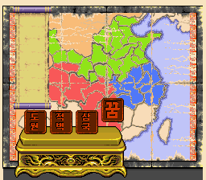
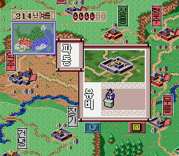
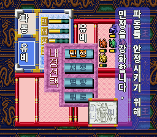
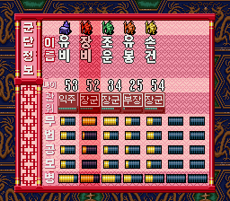
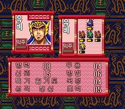
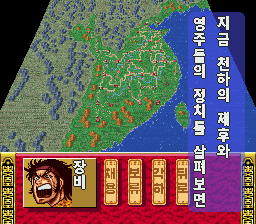
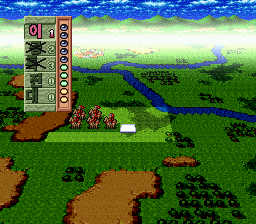

게임 소개
군주를 골라 중국 지도 위의 도시를 다스리고, 군단을 꾸려 이웃 세력과 싸우며 천하 통일을 노립니다. 이 패치는 일본어로만 나왔던 이 게임을 한국어로 즐길 수 있게 만든 팬 한글화입니다.
- 원제
- 天地を喰らう 三国志群雄伝
- 기종
- 슈퍼패미컴
- 발매
- 1995년 8월 11일 · 캡콤
- 장르
- 시뮬레이션
- 원작
- 모토미야 히로시 『천지를 먹다』
한글화 범위
- 게임 대사 전체
- 장수·도시·관직 이름, 장수 상세 화면
- 성내 명령 메뉴, 의견·정보·군단정보·군단편성 화면
- 전투 화면과 전투 명령
- 타이틀 화면(로고·부제·메뉴), 시나리오·난이도·군주 인장
- 지도 깃발, 연도·계절 표시, 관직 도장, 예/아니오
저장 화면의 「セーブ/戻る」, 목표·세력 선택 제목, 전투 상태창의 「士気/城」 같은 그림 글자 일부는 아직 원문입니다.
시나리오
도원195년원작 시나리오
적벽208년원작 시나리오
삼국214년원작 시나리오 · 유비·조조·손권
꿈214년새 시나리오 「유비의 꿈」
새 시나리오 「유비의 꿈」
214년 「삼국」을 바탕으로, 유비가 형주와 한중을 함께 쥐고 시작하는 가상 시나리오입니다. 죽은 것으로 처리된 방통·서서를 되살려 한중에 배치했습니다.
| 형주 | 유비령 · 1군단 관우(총대장)·관평·마속 |
|---|---|
| 한중 | 유비령 · 1군단 방통(총대장)·서서 |
| 파동 | 유비 본대 · 관우·관평이 빠진 채 시작 |
| 그 밖 | 214년과 같은 시작 시기·군주(유·조·손). 방통·서서·마속 시작 병력 6 |
화면







적용 방법
원본 롬 준비
일본판 「天地を喰らう 三国志群雄伝」 롬(헤더 없음, 1.5MB, SHA-1
5bdc878ec9346b285fe0707f85c9013d2aac9b4a)을 준비합니다. 512바이트 헤더가 붙은 롬이면 헤더를 떼어 주세요.패치 받기
아래 버튼으로 IPS 패치(v1.3.2)를 받습니다.
패치 적용
웹에서 바로 쓰려면 RomPatcher.js, PC에서는 Floating IPS로 롬에 IPS를 적용합니다. 결과 롬은 2MB입니다.
실행
Snes9x 같은 슈퍼패미컴 에뮬레이터에서 실행합니다. 타이틀 오른쪽 위에 v1.3.2가 보이면 성공입니다.
바뀐 점
v1.3.2 2026-10-26
- 타이틀 화면 한글화: 로고 「천지를 먹다」, 부제 「삼국지 군웅전」, 오른쪽 위 버전 표기
- 유비의 꿈: 방통·서서를 한중 1군단으로 옮김
v1.3.1
- 유비의 꿈: 방통·서서·마속 시작 병력 1 → 6 (난이도 완화)
v1.3
- 4번째 시나리오 「유비의 꿈」 추가
v1.2
- 대사 띄어쓰기(반칸 공백), 메뉴·전투·지도 그림 글자 한글화
게임 안 한글 글꼴: Noto Sans CJK, 갈무리(Galmuri) — 둘 다 SIL Open Font License.